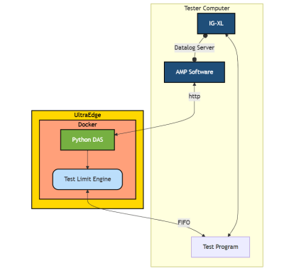

Dynamic Limit Adjustment Using UltraEdge and AMP
Reference : RA 447
Description
This demo demonstrates how a test program can interact with an UltraEdge (UE) system by uploading a Docker container.
The container includes:
- An AMP DAS (Data Acquisition System)
- A mechanism to compute a new low limit for a specific test
Once computed, this limit is transmitted via a FIFO (First-In-First-Out) queue to the test program, allowing it to update the test limit dynamically in real time.
For demonstration purposes, the new test limit is calculated as the average of all previous test results. As the test program continues, the limit is automatically updated, showcasing the system’s adaptive behavior.
The primary objective of this demo is to highlight the ecosystem synergy between AMP and UltraEdge. By combining AMP's analytics with UE’s execution capability, the test program becomes smarter and evolves based on collected data.
Key Highlights
UltraEdge and AMP Integration
Demonstrates interaction between AMP and UE to enable smarter test behavior.Dynamic Test Limits
Real-time limit updates based on live results.Adaptive Test Program
Test conditions evolve based on previous outcomes.
Visual Summary

Source Code
Note
The source code will be available in a future release via a dedicated Git repository.
General Information
- Language: Python
- Platform: IG-XL 10.50.00
- System: UltraEdge with AMP